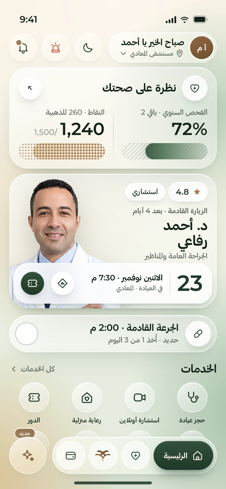

Andalusia Healththe redesigned app
Respects your time. Reassures your family.
One app for the whole visit, from finding a doctor to the pharmacy. It is built as a working prototype, in Arabic and English, and you can tap it further down this page.
- 264named screens and states
- 13new features
- 6layers over every screen
The main journey
One visit,
start to finish.
Try it
This is the app.
Tap it.
The working prototype runs inside this phone. All the data is dummy and nothing calls a service.
- 01
Book a visit
Tap حجز عيادة on Home, then choose a doctor, a day and a time. The cost shows before you confirm.
- 02
Change the look
Tap the greeting on Home to open the profile: المظهر for dark mode, الوضع المريح for the comfort mode made for older patients.
- 03
Switch to a family member
Tap the round avatar at the top of Home and pick Mariam, Youssef or Hassan. The whole app follows.
